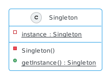

Singleton pattern¶
zorgt dat nooit meer dan één instantie van de klasse bestaat en geeft globale toegang tot deze instantie
Globaal?¶
Wat zijn globale variabelen in Java?
Math.PI
3.141592653589793
Mogelijkheden¶
controle op het creëren van instanties
beperken van het aantal instanties
kan uitgebreid worden naar een factory pattern
helpt afhankelijkeden te verbergen
centraal punt, gemakkelijk te onderhouden (vergelijk met factory pattern)
Voorbeelden¶
driver objects
database connecties
caching en thread pool
logging
Implementatie¶

public class Singleton {
private static Singleton instance;
private Singleton() {}
public static Singleton getInstance() {
if (instance == null) {
instance = new Singleton();
}
return instance;
}
}
instanceis metstaticeen veld van de klasse, niet van een instantiede constructor is
private, alleen de klasse zelf kan instantiëren!de methode
getInstancecontroleert op de enkele instantie
Singleton first = Singleton.getInstance()
Singleton second = Singleton.getInstance()
first == second
true
Voorbeeld¶


In Python is álles een object, zo ook None (en True en False …). Het object Nonewordt gebruikt om een lege waarde te representeren (vergelijk dit met null in Java). Let op, dit object heeft verder geen enkele verantwoordelijkheid.
Problemen¶
Threading, een enkele instantie is niet gegarandeerd!
public class Singleton {
private static Singleton instance = new Singleton();
private Singleton() {}
public static Singleton getInstance() {
return instance;
}
}
Een optie om dit te voorkomen is door een instantie te creëren zonder dat dit op verzoek pas gebeurt (eagerly creation).
public class Singleton {
private volatile static Singleton instance;
private Singleton() {}
public static Singleton getInstance() {
if (instance == null) {
synchronized (Singleton.class) {
if (instance == null) {
instance = new Singleton();
}
}
}
return instance;
}
}
Een tweede optie om thread-safety te garanderen is double-checked locking toe te passen. Alleen bij een eerste check (instance == null) wordt gesyncroniseerd, dat wil zeggen dat steeds maar één thread dit blok mag uitvoeren.
In combinatie met het keyword volatile wordt gegarandeerd dat in dit geval maar één instantie wordt aangemaakt. Synchroniseren van threads heeft een een impact op de efficiency, op deze wijze blijft dit beperkt.
Het effect van het keyword volatile heeft te maken met geheugenbeheer en hoe wijzigingen in caching een effect hebben op threads. In Guide to the Volatile Keyword in Java kan je meer lezen over de praktische kant van geheugen in threaded applicaties.
Verantwoord gebruik¶
Is singleton een anti pattern?
overtreedt het principe van single responsibility
tight coupling
moeilijk te testen
Een singleton heeft twee verantwoordelijkheden, ten eerste het bijhouden van een enkele instantie en ten tweede de functionaliteit van de klasse zelf, dit overtreedt het principe dat een klasse een enkele verantwoordelijkheid zou moeten hebben.
Verder heeft een singleton de karakteristieken van een globale variabele, waarmee client klassen “intieme” kennis nodig hebben van deze singleton en waarmee ze tightly coupled zijn.
Deze tight coupling heeft ook als gevolg dat het moeilijk is om methoden afzonderlijk te testen, omdat altijd de singleton als constante in de weg zit (je moet altijd in combinatie testen).
Mail Service¶
public class MailService {
private static MailService instance;
private MailService() {}
public static MailService getInstance() {
if (instance == null) {
instance = new MailService();
}
return instance;
}
// connects with SMTP server and sends mail
public void sendMail(String message) {
System.out.println("Mail sent.");
}
}
Stel dat je in jouw applicatie mail moet versturen. Het is voor te stellen dat je dit als singleton zou willen implementeren. Naast dat deze klasse verantwoordelijkheid heeft voor het beheren van een enkele instantie van zichzelf heeft het ook een tweede verantwoordelijkheid (het versturen van email).
public class MailClient {
public void sendPaymentReminder() {
MailService.getInstance().sendMail("The message");
}
}
Het gebruik is nu eenvoudig, mail valt direct te versturen via de singleton.
Testen¶
public class MailClientTest {
@Test
public void testSendPaymentReminder() {
// Test the correct working of sending a payment reminder
// We would like to mock the MailService singleton to check
// if sendMail was correctly called, but we can't ...
// And what's worse ... the singleton instance
// will be the same for every next test we will run.
}
}
Je wilt deze methode van MailClient natuurlijk ook testen, maar dan loop je tegen een probleem aan waar je wilt testen of de methode inderdaad een bericht verstuurt. Met andere woorden, je wilt testen of de methode sendMail correct wordt aangeroepen en niet zozeer dat mail wordt verstuurd.
Bovendien, als een singleton eenmaal is geïnstantieerd dan zal dit voor elke volgende test dezelfde waarde hebben.
Alternatief¶
public interface Mailable {
public void sendMail(String message);
}
public class MailService implements Mailable {
public void sendMail(String message) {
// ...
}
}
In dit geval zal je moeten bekijken hoe je deze tight coupling kan wijzigen en misschien zelfs of de voordelen van een singleton in dit specifieke geval gaan opwegen tegen de nadelen.
Het probleem dat je van een singleton niet kunt erven zou je in ieder geval kunnen verhelpen door het op een interface te baseren, en waar de concrete implementatie een singleton zou kunnen zijn.
public class MailClient {
private final Mailable mailService;
public MailClient(Mailable singleton) {
this.mailService = singleton;
}
public void sendPaymentReminder(){
mailService.sendMail("The message");
}
}
In plaast van de singleton als “globale variabele” aan te roepen zou je nu kunnen kiezen om de singleton expliciet als parameter door te geven, en waar je nu voldoende hebt aan de interface.
public class MockMailService implements Mailable {
private String messageRecieved;
public MockMailService() {}
@Override
public void sendMail(String message) {
messageRecieved = message;
}
public String getMessageRecieved() {
return messageRecieved;
}
}
Omdat je met een interface werkt is het nu ook eenvoudig om een mock MailService klasse te schrijven die je kan gegruiken in tests.
public class MailClientTest {
@Test
public void testSendPaymentReminder() {
MockMailService mock = new MockMailService();
MailClient client = new MailClient(mock);
client.sendPaymentReminder();
// test if mail service was called
assertEquals("The message", mock.getMessageRecieved());
}
}
Met deze wijziging kan je nu de onderdelen afzonderlijk en isolatie van elkaar testen. Voor tests kan je nu een klasse schrijven die MailService simuleert (een mock klasse) en gebruiken om te testen of deze inderdaad wordt aangeroepen.